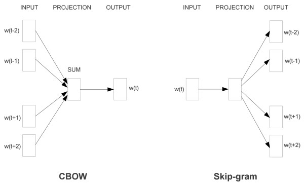

title: Skip-Gram-tensorflow
date: 2018-04-30 15:24:22
tags: 深度学习
使用工具
tensorflow
pycharm
什么是Word2Vec和Embeddings？
Word2Vec是从大量文本语料中以无监督的方式学习语义知识的一种模型，它被大量地用在自然语言处理（NLP）中。那么它是如何帮助我们做自然语言处理呢？Word2Vec其实就是通过学习文本来用词向量的方式表征词的语义信息，即通过一个嵌入空间使得语义上相似的单词在该空间内距离很近。Embedding其实就是一个映射，将单词从原先所属的空间映射到新的多维空间中，也就是把原先词所在空间嵌入到一个新的空间中去。
我们从直观角度上来理解一下，cat这个单词和kitten属于语义上很相近的词，而dog和kitten则不是那么相近，iphone这个单词和kitten的语义就差的更远了。通过对词汇表中单词进行这种数值表示方式的学习（也就是将单词转换为词向量），能够让我们基于这样的数值进行向量化的操作从而得到一些有趣的结论。比如说，如果我们对词向量kitten、cat以及dog执行这样的操作：kitten - cat + dog，那么最终得到的嵌入向量（embedded vector）将与puppy这个词向量十分相近。
模型

Skip-Gram模型的基础形式非常简单，为了更清楚地解释模型，我们先从最一般的基础模型来看Word2Vec（下文中所有的Word2Vec都是指Skip-Gram模型）。
Word2Vec模型实际上分为了两个部分，第一部分为建立模型，第二部分是通过模型获取嵌入词向量。Word2Vec的整个建模过程实际上与自编码器（auto-encoder）的思想很相似，即先基于训练数据构建一个神经网络，当这个模型训练好以后，我们并不会用这个训练好的模型处理新的任务，我们真正需要的是这个模型通过训练数据所学得的参数，例如隐层的权重矩阵——后面我们将会看到这些权重在Word2Vec中实际上就是我们试图去学习的“word vectors”。基于训练数据建模的过程，我们给它一个名字叫“Fake Task”，意味着建模并不是我们最终的目的。
从tensorflow上得到需要注意的细节
《tensorflow实战》的例程：
1.先统计训练文本中的所有单词的tf值
2.按照tf值进行排序，并用每个词在排序表中下标来表示这个词
3.使用embeding的方式将下标转换成一个128为的随机矩阵， 然后后面会通过计算损失函数自动更新这个矩阵， 这个embeding矩阵就代表着这个词
4.最后会得到一个训练好的embeding表
5.可以通过计算某一个词的下标在embeding表中找到与之相似度较高的词下标
根据和学长们的讨论，这里很有必要追加一些内容
这个Fake Task是训练什么？计算的损失是谁的损失？
前面我们已经知道，我们会将词转换成embeding的形式，然后交给模型去训练，最后我们会得到一个训练好的embeding表。
从整体上来看，这个embeding是一个权重矩阵，它是某个词的特征码（这么说的原因是为了体现特征码接近的词，特征也比较接近）。
而训练过程中调整的模型（skip-gram）的作用是，输入一个词向量，会输出一个与词向量同等规模的向量。
这个向量不一定代表某个词，但可以与正确的输出结果计算损失，然后通过这个损失调整词向量和模型里的参数。emmm，从整体上来看，这个词向量其实也是参数之一。
那么，说到这里，总结一下，Fake Task的真正意图是调整词向量，也就是所谓的权重矩阵，而这个模型本身具有的测试功能除了调整权重矩阵之外，没有别的用途（只就这里来讲）。计算的损失是skip-gram模型的损失，但这个模型后面不会再使用。